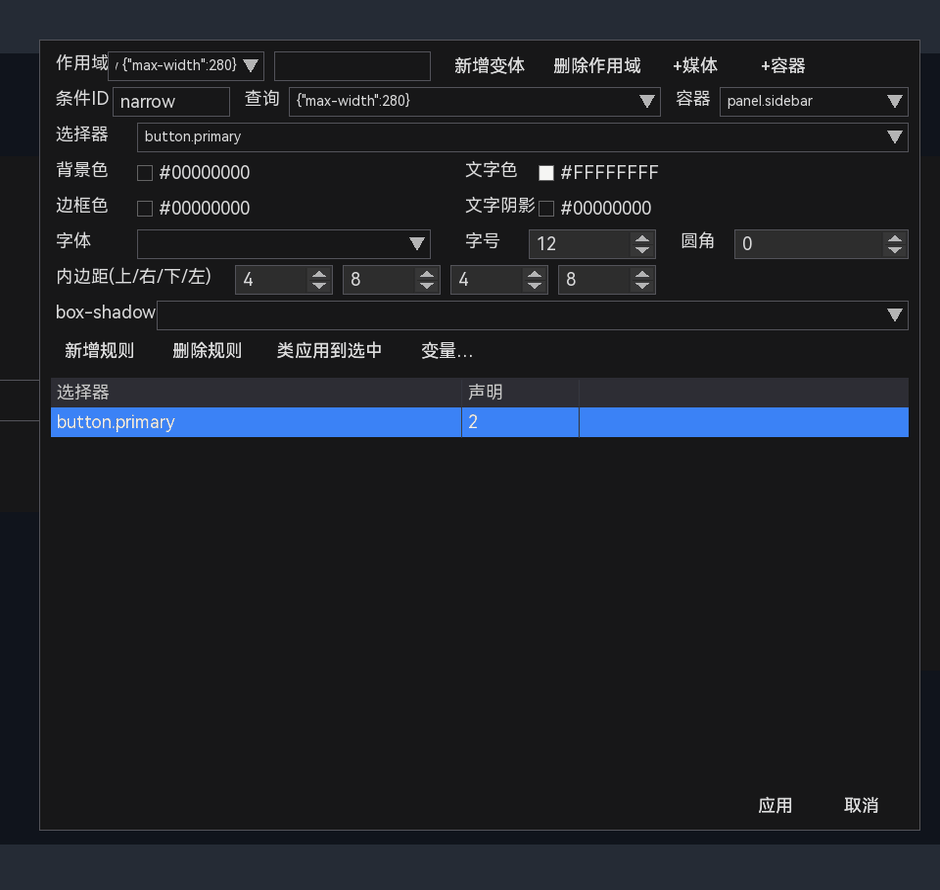
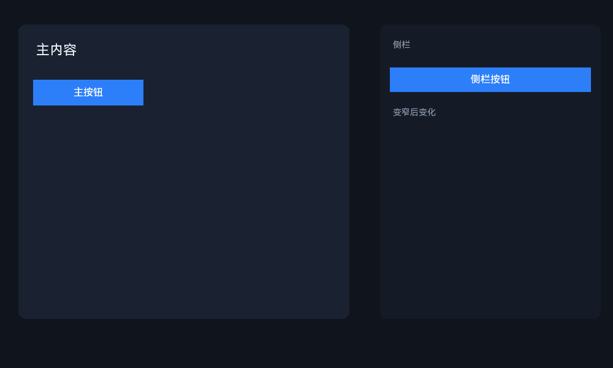
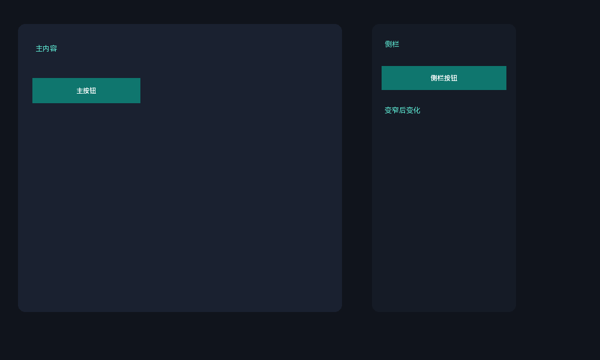

24 容器条件：侧栏变窄时调整
容器条件不是看整个窗口，而是看某个祖先容器的尺寸。典型场景：侧栏 Panel 变窄后，按钮只显示图标或缩小字号。
- 点击“+容器”。
- 编辑“条件ID”，例如
narrow。 - “容器”填祖先选择器，例如
panel.sidebar。 - “查询”填
{"max-width": 280}，或字符串(max-width: 280px)。 - 新增规则，例如
button.primary的背景色、内边距、字号。
“+容器”会自动创建条件并切换作用域。新条件默认 ID 类似 container1，默认容器是 .panel，默认查询是 (max-width: 599px)。实际使用时把“容器”改成真正要观察的祖先，例如：
| 容器写法 | 匹配 |
|---|---|
panel | 任意 Panel 祖先 |
.sidebar | 带 sidebar 类的任意祖先 |
panel.sidebar | 同时是 Panel 且带 sidebar 类 |
#sidePanel | ID 为 sidePanel 的祖先 |
容器选择器只支持简单形式，不支持空格后代选择器或逗号；管理器提供 panel、.sidebar、panel.sidebar 等常用下拉，也可手动输入。查询推荐用对象形式 {"max-width": 280}，字符串形式也可用；比较的是容器内容区尺寸。
同样，narrow 只是条件 ID 示例，不是固定值；可以按用途命名，但媒体/容器条件 ID 必须唯一（管理器会阻止重复）。

图 15-6 作用域为“容器: narrow”：条件ID、查询、容器三个字段都启用
{
"containerQueries": [
{
"id": "narrow",
"container": "panel.sidebar",
"query": { "max-width": 280 },
"styles": [
{ "selector": "button.primary", "declarations": {
"background": "#0F766E", "font-size": 11, "content-padding": "3 6" } }
]
}
]
}container 是简单的祖先选择器（类型、类、ID），匹配最近的祖先容器 contentRect。当前 UI 支持编辑 ID、query 和 container 字段。

侧栏外框 360px：未命中 max-width: 280，按钮保持蓝色

侧栏外框 240px：命中条件，侧栏按钮变青色
容器条件比较的是容器的内容区，不是外框。若侧栏有 16px 内边距，外框 280px 的内容区只有 248px；判断阈值时要把 padding 算进去。推荐用对象形式写 query，语义更清楚。